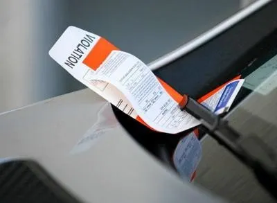

⚜️
SCURLOCK 2025
Home
Issues
Videos
Donate
Photos
Scenes from the campaign trail and across New Orleans.
City Hall outreach
Neighborhood listening session
Highlighting infrastructure needs
Working with residents
Putting people before revenue

Stronger neighborhoods
×
×
×
×
×
×